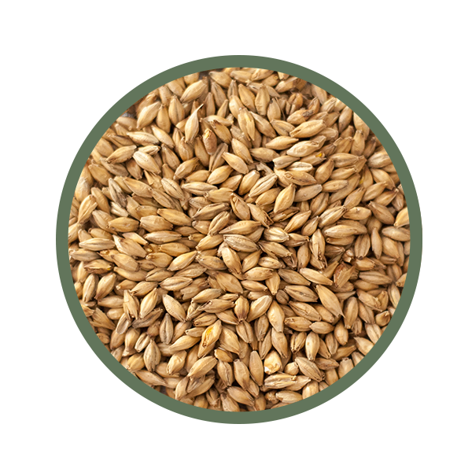

Dry Stout

Opis
Piwo to zajęło II miejsce w kategorii Stout w słowackim konkursie Biała Wrona 2012
Surowce
Słody
- słód pale ale 3,00kg
- słód monachijski 1,00kg
- jęczmień palony 0,35kg
- słód czekoladowy 0,20kg
Chmiele
- Chmiel Hallertau Tradition - 35g
Drożdże
- Drożdże Wyeast 1084 Irish Ale
Zacieranie
- 76°C - 10 min
- 67°C - 90 min
- 72°C - 20 min
Chmielenie
- 35g Tradition - 60min